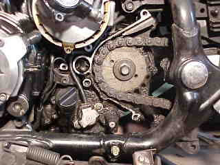
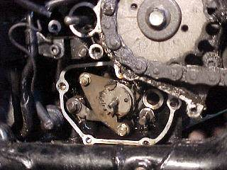
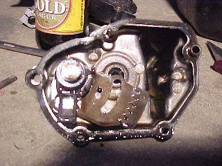
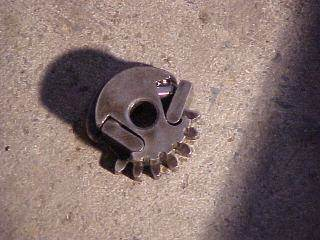
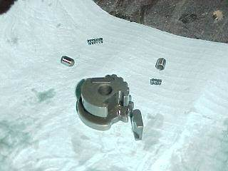
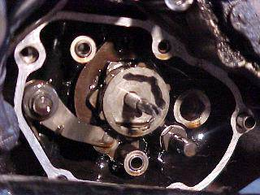

Credits:
- Thanks go out to Col Hardy for the pictures
- Words by Mr_T
Introduction:
This article highlights a problem that has occurred on a few bikes that we know of, including my own bike.
The problem can come on gradually or suddenly. For me, it was sudden.
When it happens, you may be unable to change gears in one direction, either up or down, but shifting in the other direction works ok.
My bike would shift up ok, e.g. 1st to 2nd gear, but did not want to shift back. After many tries I was able to get the bike back to 2nd gear so that I could slowly ride it home.
The gearlever would move through its normal arc, but it did not feel as if it was moving anything. If the selector problem occurs, it is more likely to affect shifting back toward 1st gear for reasons I will explain later. If you are in 6th gear on the highway and the problem strikes, you may be stranded in 6th gear.
It is not a common problem, but the Honda workshop manual has a complete section just for the selector linkage. Strangely, the workshop manual does not mention the symptoms of the problem.
Mechanics who are unfamiliar with the RC17 will give you bad and expensive news. The RC17 is now getting old and not many mechanics would know or remember much about the bike. Most of them would tell you that you have damaged a selector fork inside the gearbox, or some other problem that requires the engine cases to be split to access the gears.
Do not agree to any of that work until the gearshift selector linkage has been checked and found to be working normally, even if you have to stand by and watch the mechanic dismantle the gearshift linkage and ratchet and show you the parts.
Taking it to pieces:
- Drain the engine oil.
- Remove the clutch slave cylinder (it is not necessary to remove the clutch fluid line).
- The manual says “To prevent the clutch system from air contamination, and the slave cylinder from falling, squeeze the clutch lever immediately after removing the slave cylinder, and tie the lever to the handle grip with a string.” I didn’t do this but had no problems.
- Remove the gearshift lever from the shaft.
- Remove the sprocket cover.

Sprocket Cover Removed
Sprocket cover is removed to expose the neutral switch which in the picture is the silver bit at about 7 o’clock from the sprocket and held down by 2 screws.
- Slip the rubber cover off the oil pressure switch and disconnect the switch wire by removing the terminal screw.
- Remove the neutral switch by removing the 2 mounting screws.
- Remove the neutral switch joint.
The Gearshift Linkage Cover


Remove the gearshift linkage cover by removing the 5 socket-headed bolts.
Keep a drain bowl or tin under the sprocket cover as some oil will still be inside the gearshift linkage cover and at the gearbox case.
The shift lever could come off with the cover. That is ok, leave it there for now. Remove the dowel pins and gasket from the gearbox case.
Remove the gearshift shaft if it is still in the gearbox case.
Remove the guide plate, it is held on with 2 bolts. The guide plate is the large flat plate that holds in the “drum shifter”.
The Drum Shift Mechanism

Drum shifter
Remove the drum shifter. Be careful because there are spring-loaded parts.This picture shows what it might look like when you take it out.

Drum shifter apart
In the middle of this picture is the drum shifter. There are 2 springs, the small round cylinders are the “plungers”, the 2 tabs of metal that the springs and plungers push are the “pawls”.
Note in the picture how one of the springs is much shorter and its coils are tangled together. This is the bad spring. This tiny part will stop you shifting in one direction.
When you order the new parts, get 2 springs so you can replace both to be safe.
On my bike, both springs were bad but the bottom one could still work ok.
When the upper spring fails, gravity works against it to stop you from shifting back.
If the lower spring fails, gravity may help it to still engage the drum sometimes.
The Shift Drum Mechanism

Shift Drum
The shift drum with the drum shifter removed. This is as far as you would normally need to go.
I bought new pawls and plungers as well as the spring and the “stopper” (which is the spring-loaded lever with the little wheel on the end that clicks the shift drum into place).
I bought all the parts before I pulled it all apart. In my opinion, you do not need these extra parts, you should only need to buy the shift housing gasket and the springs.
The gear selector parts are always covered in oil so there should be very little wear.
Putting it back together:
I also fitted new seals for the gearlever shaft and for the neutral switch shaft. It wasn’t leaking oil but I wanted to do a complete job. I have had an oil leak at the neutral switch shaft ever since, so if those seals are not leaking before you pull it apart, then I suggest that you do not change those seals.
The manual says: “Install the springs, plungers and pawls to the drum shifter. While holding the pawls, install the drum shifter so that the index line on the shifter tooth faces as shown.” See the picture above or remember how it looked before you took it off.
- Install the guide plate.
- Install the gearlever shaft into the gearbox case. Align the holes in the in the gearshift shaft and drum shifter by using a pin or drill bit.
- Install the dowel pins and a new gasket.
- Install the gearshift linkage housing and tighten the five socket-headed bolts.
- Temporarily install the gear lever onto the shaft and check that you can shift to all the gears and that you can find neutral and the gearlever is in its proper place when the marks on the lever and shaft are aligned. You may have to move the back wheel with your hand while you are shifting so that you can shift through all the gears.
- Refill the engine with oil and check that the gear linkage cover and shaft seals does not leak.
- Install the neutral switch joint, aligning the pin of the joint with the slot in the little shaft that is on the end of the shift drum.
- Install the neutral switch, aligning the pin of the switch with the cutout in the switch joint.
- Secure the neutral switch with the 2 mounting screws.
- Connect the oil pressure switch wire with the terminal screw.
- Turn on the ignition and check that the neutral switch operates correctly when the gears are shifted with the gearshift shift lever, and that the oil pressure light is on.
- Install the rubber cover over the oil pressure switch.
- Install the sprocket cover, gear lever and clutch slave cylinder.
- Test ride.
Be glad that you have saved lots of money.
Part Numbers:
| Part Description | Part Number |
| Gasket, Change Cover | Old part number: 11394-MJ0-000 |
| New part number: 11394-MW3-600 | |
| Spring, Pawl Plunger | 24329-360-000 |